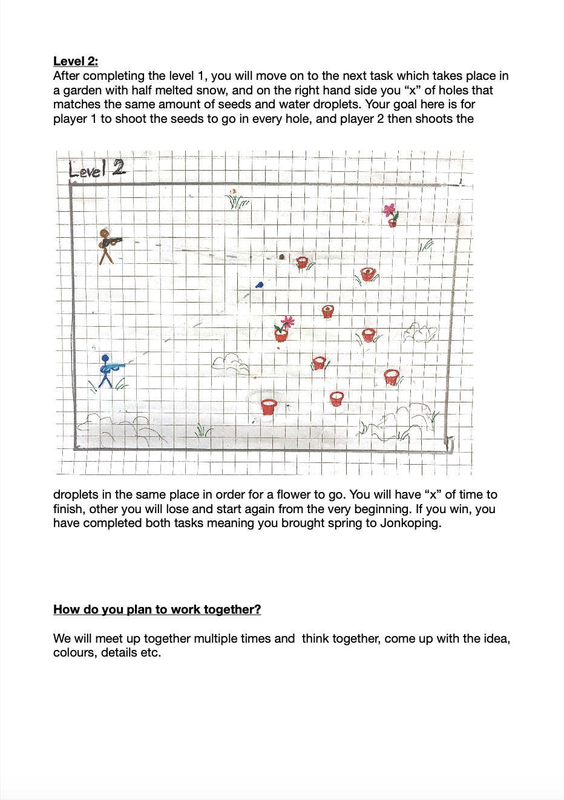
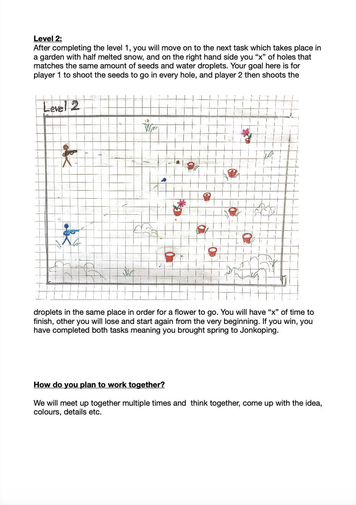

Most of the video games nowadays are individual and create a sort of social-separation. In contrast, the purpose of this two-players game is cooperation and having fun with friends by completing an exciting mission of bringing spring to Jönköping, Sweden after a cold, dark, long winter.
The project was done by a team of two, programmed with JavaScript and all the graphics were designed specifically for this game in Adobe Illustrator.
Try the Game!
Description


 

Trailer
We also had to make a short trailer for the game. We were paying attention to reflect the adventorous, playful vibe of the game. Since our story was to create spring, we shooted our trailer in two rounds. First, in the winter when it was snowing, and second already in spring when flowers were blooming.
Here are some moments from the trailer:
Before

The live action moment of the game, when the players are shooting seeds and water drops into the ground-holes, while the scene is still winter.
After

The exact same location shooted few weeks after, in spring. The scene is about the players celebrating a successful shot, which magically made the flowers bloom and brought
spring to Jönköping.